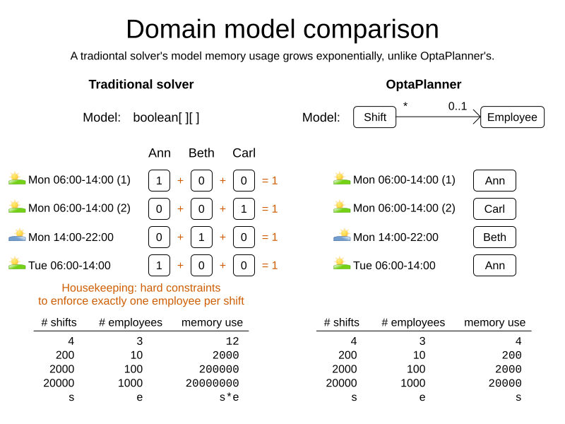

// Input
Model model = ...
Variable[][] assignments = new Variable[shifts.size()][employees.size()];
for (int s = 0; s < shifts.size(); s++) {
for (int e = 0; e < employees.size(); e++) {
assignments[s][e] = model.addVar(BINARY);
}
}
... // Add constraints to enforce no shift is assigned to multiple employees
// Solve
model.solve();
// Output
for (int s = 0; s < shifts.size(); s++) {
for (int e = 0; e < employees.size(); e++) {
if (assignments[s][e].get() > 0.99) {
print(shifts[s] + " is assigned to " + employees[e]);
}
}
}
Gurobi versus OptaPlanner comparison

Gurobi and OptaPlanner are mathematical optimization solvers. They are both used across the globe in production. But there are notable differences between OptaPlanner and Gurobi.
OptaPlanner is open source, fast, scalable and easy to use because of OO models, constraints as code and flexible scoring. OptaPlanner is also less error prone, integration friendly (including REST) and cloud ready. It runs on all operating systems.
Try it yourself. No license needed.
Get started with OptaPlanner today
for Java, Kotlin or Scala.
Or try OptaPy for Python.
OptaPlanner is Open Source
Gurobi is closed source software.
OptaPlanner is enterprise open source software under the Apache License, which allows free reuse for commercial purposes. All of OptaPlanner’s source code is available on GitHub. It’s community is open. It’s decision making is open.
A dedicated core team of optimization experts (employed by Red Hat) works full-time on OptaPlanner. Also hundreds of external developers have contributed to OptaPlanner. Regardless of who wrote the code, an(other) OptaPlanner core developer has reviewed it before it is merged into the main repository.
OptaPlanner is fast and scalable
OptaPlanner is both fast and scalable for planning and scheduling use cases, such as the Vehicle Routing Problem, Employee Rostering and Maintenance scheduling. It delivers a better results, in the same amount of CPU time. OptaPlanner also consumes less memory when scaling out.
Why? Because:
OptaPlanner uses a more efficient model
Under the covers, Gurobi and OptaPlanner use very different optimization technologies, which impacts your modeling flexibility, which in turn impacts performance and scalability.
For example, in employee rostering, to assign shifts to employees:
-
Gurobi creates a
booleanvariable for every(shift, employee)combination. Given2000shifts and100employees, that’s an array of200 000elements. -
On the other hand, OptaPlanner creates an
Employeevariable for everyShift. Given2000shifts and100employees, that’s an array of2000elements.

The OptaPlanner approach doesn’t just scale better, it also omits the one shift per employee hard constraint which the model naturally enforces by design. For VRP, the difference is even more stark.
OptaPlanner handles constraints more efficiently
Gurobi can handle billions of constraints.
OptaPlanner counts the number of constraints differently. It handles the same use case with only a few dozen constraints.
For example, to ensure each shift is assigned to an employee with the correct skill
for 2000 shifts and 100 employees:
-
Gurobi has almost
200 000constraints. -
OptaPlanner has
1constraint and a handful of constraint matches internally.
This allows OptaPlanner to scale to 100 000+ of non-binary optimization variables in only 2GB RAM for use cases such as country-wide vaccination scheduling.
OptaPlanner is easy to use
Any software developer can implement an optimization use case with OptaPlanner. There’s no need to hire expensive consultants to write complex mathematical equations. It’s OOP friendly.
Later, when your business reality changes, you can quickly adjust the OptaPlanner constraints. It is maintenance friendly.
OptaPlanner supports both Object-Orientated Programming and Functional Programming:
An OptaPlanner model is Object-Orientated Programming (OOP) friendly
Both Gurobi and OptaPlanner require you to define your model, with optimization variables, so the mathematical optimization software knows which decisions it needs to make.
Gurobi supports 3 types of optimization variables: booleans, integers and floating point numbers. You must transform your domain model into those types. For example:
OptaPlanner supports any type of optimization variables,
including your custom classes (Employee, Vehicle, …) or standard classes (Boolean, Integer, BigDecimal, LocalDate, …).
You can reuse your existing domain model, to avoid costly data transformations.
For example:
@PlanningEntity
class Shift { // User defined class
... // Shift id, date, start time, required skills, ...
@PlanningVariable
Employee employee;
}
@PlanningSolution
class TimeTable { // User defined class
List<Employee> employees;
List<Shift> shifts;
}
// Input
Timetable timetable = new Timetable(shifts, employees);
// Solve
timetable = Solver.solve(timetable);
// Output
for (Shift shift : timetable.shifts) {
print(shift + " is assigned to " + shift.employee);
}Neither of these 2 classes (Shift and Timetable) exist in OptaPlanner itself: you define and shape them.
Your code doesn’t deal with booleans and numbers, but uses Employee, Shift and DayOfRequest instances.
Your code reads naturally.
OptaPlanner even supports polymorphism.
OptaPlanner constraints are code, not equations
Gurobi constraints are implemented as mathematical equations.
For example, to assign at most one shift per day,
you add an equation s1 + s2 + s3 <= 1 for all shifts on day 1,
an equation s4 + s5 <= 1 for all shifts on day 2, and so forth:
for (int e = 0; e < employees.size(); e++) {
for (int d = 0; d < dates.size(); d++) {
Expression expr = ...
for (int s = 0; s < shifts.size(); s++) {
// If the shift is on the date
if (shifts[s].date == dates[d])) {
expr.addTerm(1.0, assignments[s][e]);
}
}
model.addConstraint(expr, LESS_EQUAL, 1.0);
}
}OptaPlanner constraints are implemented as programming code. If you use ConstraintStreams, a Function Programming (FP) approach, OptaPlanner automatically applies incremental score calculation with deltas for maximum scalability and performance.
For example, to assign at most one shift per day,
select every pair of Shift instances
that have the same date and the same employee
to penalize those pairs as a hard constraint:
// For every shift ...
constraintFactory.forEach(Shift.class)
// ... combined with any other shift ...
.join(Shift.class,
// ... on the same date ...
equal(shift -> shift.date),
// ... assigned to the same employee ...
equal(shift -> shift.employee))
// ... penalize one broken hard constraint per pair.
.penalize("One shift per day", HardSoftScore.ONE_HARD);That equal() method accepts any code as a parameter to return any type (not just booleans and numbers).
For example, because date is an instance of LocalDate (an advanced Date and Time API),
use LocalDate.isDayOfWeek() to select 2 shifts on the same day of week:
// ... on the same day of week ...
equal(shift -> shift.date.getDayOfWeek())Date and times arithmetic is notoriously difficult,
because of Daylight Saving Time (DST), timezones, leap years and other semantics that only a few programmers on this planet actually understand.
OptaPlanner empowers you to directly use their APIs (such as LocalDate) in your constraints.
Besides the equal() joiner, OptaPlanner supplies lessThan(), greaterThan(), lessThanOrEqual(), greaterThanOrEqual(),
overlapping(), etc. You can also plug in custom joiners.
OptaPlanner automatically applies indexing (hashtable techniques) on joiners for performance.
For example, select two overlapping shifts with the overlapping() joiner
(even if they start or end at different times):
// ... that overlap ...
overlapping(shift -> shift.startDateTime, shift -> shift.endDateTime)Besides the join() construct, OptaPlanner supports filter(), groupBy(), ifExists(), ifNotExists(), map(), etc.
This rich API empowers you to implement any constraint.
For example, allow employees that can work double shifts to work double shifts
by filtering out all employees that work double shifts with a filter():
// For every shift ...
constraintFactory.forEach(Shift.class)
// ... assigned to an employee that does not work double shifts ...
.filter(shift -> !shift.employee.worksDoubleShifts)
// ... combined with any other shift ...
.join(Shift.class,
equal(shift -> shift.date),
// ... assigned to that same employee that does not work double shifts ...
equal(shift -> shift.employee))
.penalize("One shift per day", HardSoftScore.ONE_HARD);The groupBy() construct supports count(), sum(), average(), min(), max(), toList(), toSet(), toMap(), etc.
You can also plug in custom collectors.
For example, don’t assign more that 10 shifts to any employee by counting their shifts with count():
constraintFactory.forEach(Shift.class)
// Group shifts by employee and count the number of shifts per employee ...
.groupBy(shift -> shift.employee, count())
// ... if more than 10 shifts for one employee ...
.filter((employee, shiftCount) -> shiftCount > 10)
// ... penalize as a hard constraint ...
.penalize("Too many shifts", HardSoftScore.ONE_HARD,
// ... multiplied by the number of excessive shifts.
(employee, shiftCount) -> shiftCount - 10);OptaPlanner allow weighting constraints dynamically. It has no linear limitations.
For example, avoid overtime and distribute it fairly by penalizing the number of excessive hours squared:
constraintFactory.forEach(Shift.class)
// Group shifts by employee and sum the shift duration per employee ...
.groupBy(shift -> shift.employee, sum(shift -> shift.getDurationInHours()))
// ... if an employee is working more hours than his/her contract ...
.filter((employee, hoursTotal) -> hoursTotal > employee.contract.maxHours)
// ... penalize as a soft constraint of weight 1000 ...
.penalize("Too many shifts", HardSoftScore.ofSoft(1000),
// ... multiplied by the number of excessive hours squared.
(employee, hoursTotal) -> {
int excessiveHours = hoursTotal - employee.contract.maxHours;
return excessiveHours * excessiveHours;
});This penalizes outliers more. It automatically load balances overtime in fair manner across the employees, whenever possible. Learn more.
OptaPlanner also support positive constraints: use reward() instead of penalize().
Gurobi sometimes recommends the M is a very large number trick to implement challenging constraints.
OptaPlanner never needs that hack.
OptaPlanner has flexible scoring
Gurobi supports 2 score levels: hard constraints as constraints and soft constraints as an objective function that returns a floating point number.
If one soft constraint takes total priority over another soft constraint, for example service quality constraints over productivity constraints, Gurobi multiplies the first soft constraint by a big weight and sums that with the second. This can lead to overflow or underflow.
OptaPlanner supports any number of score levels:
-
2 levels (default): hard and soft constraints with
HardSoftScore -
3 levels: hard, medium and soft constraints with
HardMediumSoftScore -
n levels with
BendableScore
This allows users to prioritize operational constraints (such as assign all shifts) over financial constraints (such as reduce cost), without multiplication to with a big number.
The OptaPlanner constraint weights can use:
-
32-bit integer (
int) arithmetic (default) withHardSoftScore, etc. -
64-bit integer (
long) arithmetic withHardSoftLongScore, etc. -
Decimal number (
BigDecimal) arithmetic withHardSoftBigDecimalScore, etc.
OptaPlanner actually no longer supports floating point (double) arithmetic
because of the numerical instability issues involved for incremental score calculation.
OptaPlanner does not suffer from numerical instability by design
Gurobi internally solves a set of equations using the simplex algorithm. These equations are represented by a matrix of 64-bit floating point numbers.
Floating point arithmetic inherently suffers from mathematical instability.
For example, 0.01 + 0.09 does not return 0.10 in all major programming languages.
Try it out. It’s off by 0.00000000000000001.
In iterating algorithms, these small rounding errors can compound to a significant rounding error.
Gurobi minimizes its rounding errors by ordering its arithmetic operations intelligently.
Still, by default Gurobi tolerates going over hard constraints by margin of a 0.000001 to ignore compounded rounding errors.
Users tweak the infamous tolerance settings for use cases or datasets in which the tolerances are either too high or too low.
Gurobi’s output for binary variables also suffers from mathematical instability.
For example, to check if an optimization variable is true, compare it to 0.99 instead of 1.0:
if (assignments[s][e].get() > 0.99) {
// Shift s is assigned to employee
...
}OptaPlanner does not suffer from numerical instability. There are no tolerance settings. There is no arithmetic operations ordering. It does not use floating point arithmetic in any way that could compound rounding errors. OptaPlanner internally uses Local Search metaheuristics (such as Late Acceptance), other heuristics and orthogonal features (such as multithreaded solving). None of these algorithms compound rounding errors by design.
OptaPlanner is easy to integrate with the REST, databases, etc
The OptaPlanner Quickstarts show how to integrate OptaPlanner various technologies to quickly:
OptaPlanner is cloud ready
OptaPlanner runs on all major clouds, such as Amazon AWS, Microsoft Azure, Google Compute Engine and IBM. It works on all major cloud technologies, such as Kubernetes, OpenShift, Docker and Virtual Machines.
But it just runs as fine on your local development machine without internet access, or embedded in a process on-premise.
With Quarkus it can compile Java and Kotlin code natively for serverless use cases that need to start up in milliseconds.
OptaPlanner runs on all major operating systems
OptaPlanner runs on all major operating systems, such as Linux, Windows and Mac.
Get started
To get started with OptaPlanner, read the quick start guide or copy-paste the source code of one of the OptaPlanner Quickstarts.

- Download and unzip.
-
Run
runQuickstarts.sh(Linux/macOS)
orrunQuickstarts.bat(Windows).
Requires JDK 11 or higher to run.

Latest release
-
Wed 8 December 2021
Paid support and consulting
Want to talk to the experts? Red Hat offers certified binaries with enterprise consulting. Contact optaplanner-info for more information.
Upcoming events
-
Brno, Czech Republic (virtual) - Fri 28 January 2022
- Artificial Intelligence on Quarkus: I love it when an OptaPlan comes together by Geoffrey De Smet
-
Stockholm, Sweden - Mon 7 February 2022
- AI maintenance scheduling with OptaPlanner on Quarkus by Geoffrey De Smet
Latest blog posts
-
Tue 26 October 2021
Radovan Synek
-
Thu 14 October 2021
Walter Medvedeo
-
Tue 12 October 2021
Christopher Chianelli
-
Tue 5 October 2021
-
Wed 15 September 2021
Geoffrey De Smet
-
Thu 19 August 2021
Lukáš Petrovický
-
Mon 26 July 2021
Latest videos
-
AI lesson scheduling on Quarkus with OptaPlanner
Thu 18 November 2021
-
Maintenance scheduling
Fri 12 November 2021
-
Optimized order picking in warehouses and supermarkets
Tue 26 October 2021
-
A modern OO/FP constraint solver
Tue 14 September 2021
-
Business processes task optimization in Kogito
Tue 7 September 2021
-
School timetable optimization
Mon 6 September 2021
-
Schedule incoming calls real-time
Mon 23 August 2021